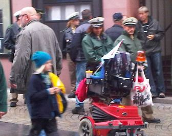

Kontakt zum Künstler auch über die Redaktion kommunal
Mehr von ihm HIER
Kontakt zum Künstler auch über die Redaktion kommunal
Mehr von ihm HIER
An diesem Wochenende im Main-Echo/Bote vom Untermain: Die Zeitung meint, das Wetter „fordert zum einen oder anderen Freiluft-Schoppen … in der Aschaffenburger Traditionsgaststätte Schlappeseppel“ auf.
Kapitalismus, Anmerkung 1: Tradition ist auch, wenn es im Schlappesppell kein „Schlappeseppel“ gibt, sondern – aufgrund besserer ökonomischer Zusagen an den Kneipeninhaber – jetzt die Miltenberger Plörre „Faust“.
Kapitalismus, Anmerkung 2: Zu S&K, der Firma aus dem Kreis Miltenberg mit den großen Gewinnversprechungen, haben wir bisher nichts gesagt. Nun hat sich – auch an diesem Wochenende in der Zeitung zu lesen – der eine Gesellschafter mit einem Sprung aus dem Gerichtsgebäude in die Freiheit begeben wollen; schwere Verletzungen waren die Folge.
Zu S&K sei gesagt, dass
1. wir uns nicht für die Glücksversprechungen des Kapitalismus interessieren, da wir sie nicht glauben.
2. alles weitere ein ordentliches Gericht zu klären hat.
Hier nur so viel:
Werbevideo von S&K
Und wie mensch das noch sehen kann
Manchmal sind Schlussfolgerungen des Main-Echo offenbar von dem Interesse an einer bestimmten Interpretation der Dinge geleitet. So schreibt die Zeitung heute auf Seite zwei, dass „die NPD beim Urnengang im Freistaat nicht genügend Stimmen bekam, um Geld aus der staatlichen Wahlkampfkostenerstattung einzustreichen“. Im Bund und in Hessen war dies anders. „Schätzungen zufolge kann die NPD allein aus der Bundeskasse mit einer halben Million Euro an Steuergeld rechnen, mindestens aber 70 Cent pro Zweitstimme: knapp 400 000 Euro.“ Die daraus gezogene Schlussfolgerung scheint aber mit esoterischem Wissen angereichert: „Somit zahlt sich die Provokation, die die NPD im Wahlkampf zum Prinzip erhob, im Wortsinn aus.“ Kein Geld in Bayern, nur 1,3 % im Bund, nur je 1,2 % im Kreis Miltenberg oder in Aschaffenburg, somit hier sogar nochmal ein kleiner Stimmenrückgang – das alles soll eine Wirkung des provokativen Wahlkampfes sein? Kurz danach erfahren wir auch, was so provokativ war: „Doch egal, ob in Würzburg, Aschaffenburg oder Hanau: Zumindest in der Region brüllten jeweils mehrere Hundert Gegendemonstranten die Auftritte des NPD-Vorsitzenden Apfel im September nieder. Auch die kleineren NPD-Kundgebungen in Miltenberg, Obernburg und Alzenau waren begleitet von Protest.“ Also der Protest macht die Provokation erst rund. Und diese Protestler „brüllten“ die NPD „nieder“ – ein Sprachgebrauch, wie er bei der Beschreibung der Taten historischer Nazis gerne verwendet wird. Was sollen wir uns dabei denken?
Allerdings kommt die Zeitung nicht umhin, die Berechtigung des Gegenprotestes zu bestätigen: „»Dass war gut so«, urteilt der Berliner Rechtsextremismus-Experte Hajo Funke gegenüber unserer Zeitung. Der Politologie-Professor sagt: »Die Zivilgesellschaft vor Ort muss den Alltagsterror eindämmen.«“ Recht hat er, der Professor. Die NPD will vor allem eines: als ganz normale Partei wahrgenommen werden, die einfach wie jede andere ungestört ihre Kundgebungen durchziehen kann. Das wäre die Voraussetzung für Seriosität und wirklichen Erfolg außerhalb der knallrechten Prügelszene. Und das sollte der NPD versaut werden, damit wir nicht Zustände bekommen wie in Teilen des Ostens der BRD.
Uns aber bleibt schleierhaft, wie von einem Erfolg der NPD gesprochen werden kann, nachdem sie flächendeckend einen Stimmenrückgang zu verzeichnen hatte; und nachdem sie das offenbar recht große knallrechte Wählerpotential nur zu einem Bruchteil erreichen konnte. Viel erfolgreicher war die Alternative für Deutschland, die auch das erheblich größere Problem darstellt.
Das Wesentliche zur gestern durchgeführten Bundestagswahl in Kürze: Die FDP ist an der 5-Prozent-Hürde gescheitert und damit erstmals in der Geschichte der Bundesrepublik nicht mehr im Bundestag vertreten. Die sozialdarwinistische und europafeindliche Alternative für Deutschland ist ebenfalls gescheitert. Soweit die guten Nachrichten.
Nun zum Negativen: Die NPD erhält für ihre 1,3 % Wahlkampfkostenerstattung, was bei einer Bundestagswahl schon ab 0,5 % der Stimmen gegeben ist. Damit finanzieren die Steuerzahler/innen mal wieder den offenen Rassismus, Antisemitismus, Sexismus und Militarismus – eben alle diese Ismen, bei denen sich die NPD so wohl fühlt.
Mit 4,7 % scheiterte die AfD zwar, holte aber mit diesen knapp 5 % einen mehr als nur Achtungserfolg. Das aber heißt nichts Gutes zur Situation in diesem Land.
Im Kreis Miltenberg lag die AfD mit 3,76 % fast ein ganzen Prozentpunkt unter dem Bundesschnitt. Die NPD holte mit 1,16 % ein besseres Ergebnis als die bürgerlich-ökologische ÖDP. Rechnen wir die Ergebnisse von AfD, NPD und den ebenfalls extrem rechts stehenden Republikanern und Pro Deutschland zusammen, so haben 3.755 Menschen im Kreis MIL eine knallrechte Partei gewählt. Ekelhaft.
Die Linke holte in MIL mit 3,52 % mal wieder ein extrem niedriges Ergebnis, das weit unter dem Bundesschnitt liegt.
Die kompletten Ergebnisse hat kommunal zusammengestellt und mit den Bundesergebnissen versehen (PDF).
41 Millionen Zeitungen will die BILD am Samstag bundesweit verteilt haben. Das heißt: Ob in der Wilhelmstraße in Klingenberg oder der Nikolaus-Fasel-Straße in Miltenberg oder in der Bahnstraße in Erlenbach/Main – überall lag die BILD ungefragt in den Briefkästen. In dieser vordergründig nur zur Wahl auffordernden Ausgabe war die rechts-konservativ-neoliberale und halbfaschistische Alternative für Deutschland bereits als ernstzunehmende Partei in der Rubrik „Das haben die mit uns vor“ ganz selbstverständlich aufgeführt. Einem Computerspiel-Kommentator (arbeitet für sein Geld!), der die AfD wählt, war ein arbeitsloser (!) Punk gegenübergestellt, der seine Stimme für die Piraten und die Linke abgeben möchte. Wer das für Zufall hält, hat von BILD aber auch garnix verstanden.
In die Kerbe „wir müssen alle zur Wahl gehen“ haut heute auch die regionale Schwachsinnspostille Prima Sonntag. In ihr toben sich so relevante Figuren aus wie Marco Roth (Trainer eines lokalen Fußballclubs) oder Heinz Kaiser (der war vor gefühlten 100 Jahren mal Landtagsabgeordneter der SPD). Mit dabei auch internationale Schwergewichte wie Heinz Danner (Vorstandsvorsitzender einer Sparkasse!) oder Anna Ewelina (angebliche Schauspielirin aus Aschaffenburg, die aber niemand kennt). Prominent ist sicherlich noch immer die ehemalige Bundestagsabgeordnete der Grünen Christine Scheel. Sie meint allen Ernstes, wir hätten eine „gut funktionierende Demokratie“ und es gäbe „große Unterschiede“ zwischen den Parteien. Oh stiller Einfalt holder Zauber! Oder ist es nur pure Ideologieproduktion, was diese Rechtsaußen der Grünen hier ablässt?
Der bayerische Untermain hat heute gewählt. Und es war wieder nur Unfug!
In der letzten Woche wurde ein Beitrag zum Auftritt der NPD in Aschaffenburg auf Indymedia linksunten geschrieben. Wir machen darauf aufmerksam, da dort die Geschehnisse nochmal zusammengefasst sind und vor allem die beteiligten NPD-Kader gezeigt und benannt werden (siehe auch in den Kommentaren zu dem indymedia-Beitrag).
Von Knallrechten geht immer eine besondere Gefahr für Leib und Leben aus. Das liegt schon in deren Ideologie begründet, die Gewalt nicht nur nicht ausschließt, sondern sie als Beweis für Stärke – und damit für das durch sie begründete Recht – ständig einplant. Daher ist es sehr wichtig, jene Personen zu kennen, von denen eine verstärkte Gewaltbereitschaft gerade gegen Migrantinnen und Migranten, gegen Jüdinnen und Juden, gegen Linke und antifaschistisch Aktive ausgeht. Und das nicht nur in Deutschland.
Wenn ein Song auf Youtube erscheint, dann ist dies nichts Besonderes. Wenn dieser mit einem Gegensong kommentiert wird, dann ist das schon seltener, aber noch immer nichts von weltbewegender Ausnahme. Kommt dann eine musikalische Rückantwort auf die zuvor erfolgte Antwort, dann ist das noch seltener – aber nur dann für uns von Interesse, wenn es uns inhaltlich interessiert (tut es) und aus unserer Region kommt (tut es auch). Also: Auf die Antwort zum Miltenberg-Untergrund-Titel „Messezeit“ kam nun wieder eine Antwort:
Der kommunal-Administrator fühlt sich nicht berufen, darauf nun inhaltlich und musikalisch-kritisch zu antworten. Kann das mal jemand anderes machen?
„Die rund 100 Gäste beklatschten und bejubelten die Sprünge. Bewertet hat die Jury sechs Kategorien, das Dirndl selbst, dann das »Untenrum«, die Haltung, der Flug, die Eintauchphase und der Gesichtsausdruck.“ (Main-Netz.de, 17.09.13)
Was war geschehen? Es war zum ersten Miltenberger „Dirndlspringen“ geladen worden. Tatsächlich sprangen mehrere Frauen in Dirndl, oder dem, was am Untermain für ein solches gehalten werden darf, vom Dreimeterturm des Miltenberger Freibades. Die anwesenden männlichen Gäste durften so dem Voyeurismus frönen, indem sie nicht nur den jungen Frauen unter die hoch fliegenden Röcke sehen konnten, sondern auch noch die bajuwarische Form des Wet-T-Shirt-Contest erleben durften.
Proteste gegen den sexistischen Müll? Weit gefehlt. Selbst sich emanzipiert oder zumindest selbstbewusst gebende Frauen bezeichnen heute durchgehend alle Kritikerinnen und Kritiker solcher Zumutungen als „Spaßbremsen“ oder „Nörgler“.
Wir waren in dieser Debatte schon mal weiter. Soll aber niemand sagen, wir hätten es nicht wenigstens bemerkt, was da an Sexismus abläuft – so mit „Untenrum“.
Zu unserer Nachricht NPD bringt „neutrales Publikum“ selbst mit vom 10. September ging gestern ein Kommentar ein, der sicherlich untergehen wird, wenn wir ihn nicht besonders erwähnen. Er zeigt uns, dass kommunal auch von Menschen gelesen wird, für die wir eigentlich nicht schreiben. Ein gewisser „Beobachter“ behauptet darin eine gute Zusammenarbeit zwischen NPD und Polizei. Wir lassen dies unkommentiert. Hier der Text:
Beobachter 17. September 2013 um 21:52 Uhr
Die Passanten in Miltenberg gab es wirklich, die die ihr in Obernburg so wahnsinnig gut als mitgebrachtes Personal recherchiert haben wollt, waren Zivilpolizisten^^
Die in der Tat öfters nett mit uns plaudern und über die ,,Zecken“ ablästern, glaubts oder laßt es sein, es ist so
Keinesfalls soll die Debatte um den Beitrag von Claus Berninger abgewürgt werden, ganz im Gegenteil. Es soll hier nur einmal eine kurze Rückmeldung bzw. Einschätzung dazu gegeben werden.
Die kurze Nachricht war ursprünglich nur der Vollständigkeit halber gebracht worden; es sollte einfach auf die für kommunal nicht nachvollziehbare Reaktion von Claus Berninger hingewiesen werden. Dass daraus eine Diskussion mit erheblichen Zugriffszahlen auf diesen Beitrag und inzwischen 22 Kommentaren wurde, das war in keiner Weise geplant. Es zeigt aber, dass es ein Bedürfnis an Debatte gibt. Vielleicht wäre es möglich, in Aschaffenburg diese Diskussionsbereitschaft aufzunehmen und in eine nicht-virtuelle Debatte umzuwandeln. Dies nur als Empfehlung aus der tiefsten Provinz mitten im Kreis Miltenberg.
Diese erfreuliche Diskussionsbereitschaft war es auch, die wesentlich mitverantwortlich war, dass kommunal einige Tage auf Platz 22 beim Blogsport-Ranking kam (zum Vergleich: derzeit auf Platz 68, vorher immer im deutlich dreistelligen Bereich). Die 22 Kommentare für einen einzigen Beitrag verschafften uns heute sogar Platz 1 beim Kommentare-Ranking, wobei sich diese Rankings offenbar immer auf die letzten Stunden oder Tage beziehen. Nun gut, das wird nicht so bleiben, muss auch nicht. Aber es zeigt, dass hier eine Debattenbereitschaft vorhanden ist, die wohl sonst in der links-alternativen Szene, die sich bei Blogsport tummelt, nicht so ohne Weiteres gegeben ist. Weiter so!
„Mitglieder des Miltenberger Stadtrats und der Kirchengemeinden haben sich gestern Nachmittag kurzfristig zu einer Andacht in der Klosterkirche am Engelplatz zusammengefunden. Anlass war eine Kundgebung der rechtsextremen NPD in der Kreisstadt.“ So steht es heute im Boten vom Untermain (Miltenberg).Weiter: „Während draußen Vertreter der Gruppierung am Mikrofon standen, sangen und beteten drinnen eine halbe Stunde lang mehr als 50 Menschen gemeinsam mit den Pfarrern Christian Lutz und Peter Neubert für Frieden und Toleranz. Die Glocken der Klosterkirche und der evangelischen Kirche läuteten, einige Vorbeifahrende übertönten die Stimmen auf dem Engelplatz mit Hupen und einem aufgedrehten Autoradio. »Wir wollten keine Großdemonstration«, sagte Bürgermeister Joachim Bieber zum Ausklang der Andacht. »Aber wir wollten als Stadtrat deutlich machen, dass wir uns gegen die Kundgebung stellen.«“ Zum Schluss heißt es: „Als nach dem Ende der Andacht immer noch Reden auf dem Engelplatz gehalten wurden, bildeten Rats- und Gemeindemitglieder spontan einen Chor. Eine Viertelstunde lang sang dieser mit »Shalom chaverim – Friede sei mit Euch, Freunde« direkt gegen die Sprechenden an. Zum Abschied drehten die Singenden den sieben Personen vor dem alten Parteibulli den Rücken zu.“
Nichts gegen das Beten. Aber es reicht nicht. Das haben auch die im Pressebeitrag des Boten vom Untermain unterschlagenen Störer begriffen, die aber zu wenige waren.
In diesem Fall war das Beten sogar weniger als möglich gewesen wäre: Wenn der Stadtrat 50 Leute in eine Kirche bringt, die nur noch von bestimmten Menschen besucht wird, dann hätte er mit ebensoviel Aufwand auch 100 auf den Engelplatz bringen können. Und die hätten den Nazis mit Trillerpfeifen und Sprechchören sicherlich so eingeheizt, dass diese keine Lust mehr gehabt hätten, nach Miltenberg zu kommen.
Aber das dünne Gebimmel einer Franziskanerkirche (die keinen Kirchturm haben darf) und die Gesänge eines spontanen Chores – das reicht nicht, um die NPD abzuhalten, Miltenberg künftig zum Wunschziel zu erklären.
Sage keiner, kommunal habe die Miltenberger nicht gewarnt!
Heute stand die NPD wieder auf dem Miltenberger Engelplatz mit mehreren Fahnenträgern und rassistischer Ansprache. Die Kirchenglocken der Klosterkirche (katholisch) und der Johanneskirche (evangelisch) sowie mehrere hupende und laute Musik aus offenen Fenstern spielende Autos machten stellenweise das Verstehen schwierig. Allerdings war ein geordnetes Entgegentreten wieder nicht möglich, da es die Stadt Miltenberg vereitelte und diesen braunen Aufmarsch nicht bekannt gab!
Im Verlauf der Kundgebung gab es dann doch massive Pfiffe und Rufe gegen die Nazis.
In Reih und Glied: die NPD heute in Miltenberg
Die Polizei steht dabei
Alibihandlung der Stadt Miltenberg: Transparent „Miltenberg ist bunt“
15.30 Uhr: Alles vorbei; unter Blaulicht (rechts) wird der gelbe Kleinbus der NPD (links) weg-eskortiert.
Vortrag: Bedingungsloses Grundeinkommen für Alle – Eine Forderung zwischen
Realpolitik und Utopie
Referent: Werner Rätz aus Bonn (Ko-Kreis-Mitglied von Attac Deutschland)
Veranstalter: BasisGruppe Emanzipation Aschaffenburg
Datum: Mittwoch, 19.09. ab 19 Uhr
Ort: Stern e.V., Platanenallee 1, Aschafffenburg
Veranstaltungsbeschreibung:
(mehr…)
Gestern waren Wahlen und die CSU regiert wieder alleine in Bayern. Das braucht hier nicht weiter behandelt zu werden bzw. darf an anderer Stelle eine Kommentierung erfahren. Wichtiger ist es, auf die regionalen Besonderheiten einzugehen.
Georg Liebl hat mit 2,2 % im Kreis Miltenberg mehr geholt als seine Liste Die Linke (1,6 %). Auch bei ihm gingen die von der SPD geliehenen Stimmen offenbar wieder an diese zurück, was bereits eine ganze Menge über das Wahlvolk der Linken aussagt. Wichtiger: Sein von der Kreisspitze der Partei Die Linke bemängeltes Verhalten im Aschaffenburger Kreisverband, das zu Ausschlussantrag gegen ihn und Rücktritt des kompletten Vorstandes führte, braucht ihn nicht zu kümmern. Er wird dafür eher noch belohnt.
Die Piraten kamen in der Stadt Aschaffenburg auf 2,48 %, der aus Aschaffenbrug stammende und dort sehr bekannte Direktkandidat Johannes Büttner nur auf 2,32 %. Wir dürfen vermuten: Büttner wird nach den diversen Wechseln zwischen Alternativen/Grüne, Linke, KI und Piraten die Ernsthaftigkeit nicht mehr abgenommen.
Die REPs erreichten an Zweitstimmen 1,74 % (Kreis Miltenberg), 1,87 % (Aschaffenburg Stadt) bzw. 1,83 % (Aschaffenburg Landkreis). Damit schnitten sie zweimal besser ab als die öko-konservative ÖDP, die 0,92 % im Kreis AB, 1,40 % in der Stadt und 2,17 % im Kreis MIL erhielt. Die REPs konnten damit wohl das Wählerreservoir ausschöpfen, das sie sich sonst mit der NPD hätte teilen müssen, wenn diese die Wahlzulassung in Unterfranken geschafft hätte.
Die Volksentscheide gingen – soweit bekannt – mit überaus großer Zustimmung durch. Problematisch sind hier vor allem zwei: Jener, der eine Schuldenbremse verordnet, da sich der Freistaat damit selbst amputiert und dann nur über Steuererhöhungen (für wen wohl?) und Abbau von Infrastruktur und Sozialleistungen Defizite wird ausgleichen können; und jener, der das Ehrenamt quasi als Staatsziel festschreibt, womit die Verehrenamtlichung des Sozialen weiter zementiert wird: Ehrenamt statt Sozialstaat, Ehrenamt statt Kulturpolitik, bald auch Ehrenamt statt Bildungsmaßnahmen.
Seit 8 Uhr dürfen auch am bayerischen Untermain die Wählerinnen und Wähler ihre Stimmen abgeben und haben dann, wenn die Spötter Recht behalten, nix mehr zu sagen. Infos zum Kreis Miltenberg, zur Stadt Aschaffenburg und zum Kreis Aschaffenburg gibt es unter diesen Links.
kommunal wird versuchen, morgen eine kleine Analyse nachzureichen; nicht weil wir große Hoffnungen in Wahlen setzen, sondern wegen der trotz Wahlkritik richtigen Feststellung, dass Wahlen ein ideologisch aufgeladener, ein hoch ritualisierter und damit wichtiger Teil der Politik sind. Quasi der Gottesdienst der parlamentarischen Demokratie.
Dank an MiBa für den Hinweis zu diesem Video.
Korrespondentinnen-Bericht / übermittelt per Mobiltelefon, 18.30 Uhr
Eine Gruppe von Gegendemonstrantinnen und -demonstranten hat heute die Passantinnen und Passanten der Aschaffenburger Einkaufsstraße aufgefordert, bei der NPD kein Info-Material mitzunehmen. Daraufhin gingen die Mitglieder der NPD vom Info-Stand aus in Richtung der Gegner/innen, wobei sie sichtbar bewaffnet waren mit Pfefferspray und Quarzhandschuhen sowie in Begleitung eines Hundes. Die NPD-Aktiven wurden handgreiflich und bespuckten ihre Gegner/innen. Die Polizei forderte die Gegner/innen (!) auf, die Provokation zu unterlassen.
Soweit der kurze Bericht aus Aschaffenburg.

Polizei in Aschaffenburg, heute um die Mittagszeit
Fotos heute: Michael Baumann, Aschaffemburg
Heute in Aschaffenburg: Die NPD ist wieder da. Obwohl alle demokratisch-bürgerlichen Parteien auch mit Infoständen in der Herstallstraße vertreten sind, es ist schließlich Wahlkampfzeit, gibt es diesmal offenbar keine Gegenaktion.
Foto: MiBa
Der Medizinkonzern Fresenius soll die früher einmal kreiseigenen Kliniken in Miltenberg und Erlenbach/Main vom Rhön-Kliniken-Konzern übernehmen. Erstmal dürfte sich an der ungenügenden Situation vor allem im Pflegebereich nichts ändern – aber wenn, dann kann es nur schlimmer werden. kommunal berichtete schon 2011 ausführlich über die Kliniken, die nun nicht nur kein Defizit machen, sondern den Aktionären auch noch Gewinn bringen sollen: Unsere Krankheiten tun denen sehr gut!
Martin Schwarzkopf (Main-Netz.de, 14.09.13) ist zuzustimmen: „Wer als Politiker die Verantwortung für Krankenhäuser aus der Hand gibt, sitzt nur noch auf der Zuschauertribüne und kann kaum noch Einfluss nehmen auf die Entwicklungen vor Ort. Das haben die Lokalpolitiker rund um Miltenberg und Erlenbach am Freitag gespürt, sie erfuhren von den Klinik-Übernahmen teilweise von Journalisten.
Deshalb ist es gut und richtig, dass die Kommunalpolitiker in Stadt und Kreis Aschaffenburg einen anderen Weg wählen und gemeinsam mit Hanau einen starken kommunalen Klinik-Verbund schmieden wollen. So bleibt die Verantwortung für die Gesundheitsversorgung da, wo sie hingehört: bei den gewählten Vertretern der Bürger und Steuerzahler.“
Einen – gelinde gesagt – höchst seltsamen Kommentar zum Geschehen beim NPD-Aufzug in Aschaffenburg hat Claus Berninger abgelassen. Sicherlich: Es ist an den Aschaffenburgern, das zu kommentieren. Wir können nur vermuten, dass Claus Berninger der Antifa eine einschenken will, da – wenn wir uns recht erinnern – die mal nörgelte, nachdem er eine der Grauzone-Bands in seinem Colos-Saal auftreten ließ. Ist es so?
Update 2: Gut drei Stunden waren NPD-Parteichef Apfel und zwölf weitere Anhänger in Gewahrsam der Polizei Unterfranken. Nach der Wahlkampfveranstaltung in Aschaffenburg haben einige von ihnen mit Feuerlöschern Passanten besprüht. Die Beamten ermitteln wegen gefährlicher Körperverletzung. Berichte HIER und HIER. (Danke für die Zusendung der Links.)
Update: siehe Nachtrag im Kommentar zu dieser Nachricht
**********
Soeben berichtet das Main-Echo: „Ein Häuflein NPDler zieht erneut ein braune Spur durch unsere Region. Nach Würzburg am Vormittag, waren die Nazis bis gegen 16 Uhr in Aschaffenburg. Etwa 400 Gegendemonstranten machten gegen den NPD-Chef Apfel und seine Anhänger Lärm. Viel Lärm.“ Weiter: „Ganz vorn bei den Protestlern dabei: Aschaffenburgs OB Herzog, der Aschaffenburger Kabarettist Urban Priol, etliche Stadträte, Abgeordnete und Landtag- sowie Bundestagskandidaten. Die nahe Kirche hat mit ihren Glocken ebenfalls gegen die NPD-Reden geläutet – war fast nicht nötig, denn die Demonstranten sind laut genug.“ Da war der ehemlige Miltenberger Pfarrer Boom wohl Vorbild!